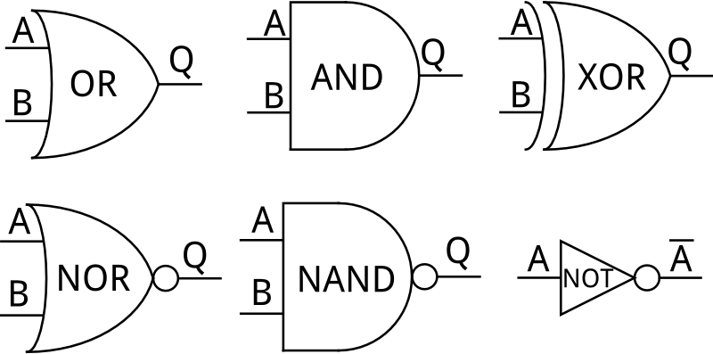
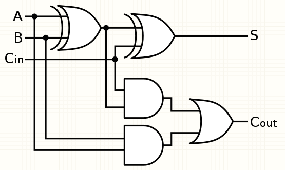

Boolean Applications
Bitwise Manipulation
Bitwise operators can be used to compare and manipulate binary values.
They consist of the symbols: & (and), | (or) and ^ (xor). These can
be applied to binary values to compare bits in each position. For example,
0010 & 0110 would return 0010, as that position is the only one that contains
a '1' in both nibbles. On the other hand, 0010 | 0110 would return 0110, as
it returns a '1' for any position that contains at least one '1'. Lastly,
0010 ^ 0110 would return 0100, as '1' is only returned when one or the other
contains a '1' but not both
Other bitwise operators include 'bit shifters'. << will move
every didgit one to the left, and >> will move them one to the right.
These can be applied in statements to shift bits more than one position.
For example, 2 << 3 returns 16. This is because 2 can be represented as 0000 0010.
Therefore, by shifting three places we get 0001 0000, which is 16 in binary.
Drawing logic diagrams
Logic statements can be represented by drawing diagrams. Each 'gate' has a symbol, as shown below.
Boolean theory can be applied to lots ot real world situations

A Half Adder

A Full Adder
